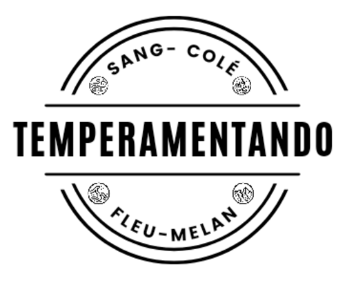

Leia atentamente as questões e responda conforme o que melhor descreve seu comportamento:
Este teste consiste em duas partes: a primeira para determinar se o Temperamento é quente ou frio; a segunda para determinar úmido ou seco. A combinação dessas características resulta em seu temperamento.
Não existe temperamento melhor ou pior, portanto, evite manipular suas respostas para obter um resultado específico.
Lembre-se de que o temperamento não requer esforço, é o que é natural para você, aquilo que está no fundo, longe de todos os filtros que usamos para viver em sociedade.
Você deve marcar entre "A e B".
@TEMPERAMENTANDO.OFICIAL
Teste Parte 1

Questão 1: Quando você está em um ambiente novo.
Você tende a explorá-lo completamente.
Tende a ser receoso em novos ambientes.
Questão 2: Quando alguém lhe ofende de forma inesperada.
Você já tem uma resposta.
Não reage rapidamente às ofensas inesperadas.
Questão 3: Para você.
É muito fácil emitir sua opinião em meio a um grupo de “semi-conhecidos”.
Não consegue elaborar uma opinião sem se sentir muito seguro antes.
Questão 4: Para você.
A comunicação e a oportunidade de se posicionar são imprescindíveis...
Você suporta por um bom tempo quando não pode se posicionar.
Questão 5:
Muito fácil tomar uma atitude em ações em grupo.
Possui dificuldades em tomar decisões em meio a um grupo.
Questão 6:
Você é o primeiro a se manifestar em dinâmicas de grupo.
Você espera que outro de o primeiro passo em dinâmicas de grupo.
Questão 7:
Você se sente desconfortável vivendo apenas o óbvio e o previsível.
Para você, uma vida previsível e estável é mais confortável.
Um tom de voz elevado.
Seu tom de voz é mais manso/vacilante/baixo.
Questão 9: Você precisa.
Se expressar constantemente.
Se expressar constantemente lhe cansa muito.
Questão 10: Para você.
É muito difícil guardar para si quando não gosta de algo; logo fala.
Não tem certeza de como se expressar de imediato se não gostar de algo.
Questão 11: Para você.
Não tem problema nenhum em ter assunto com as pessoas.
Tem dificuldade em ter assunto com as pessoas.
Questão 12: Você é.
É considerado uma pessoa agitada.
Te veem como calmo ou lento.
Questão 13: Em situações você.
Quer resolver tudo para ontem e agita os que o cercam com sua agitação.
Tem paciência para resolver ou, se está ansioso, não agita os outros.
Questão 14: Você sente que.
Sente que faz muito esforço para não ser precipitado.
Sente que faz muito esforço para tomar decisões mais rápidas, pensando menos.
Questão 15: Você tende a.
Tende a tirar conclusões rápidas sem pensar muito.
Tende a pensar demais para enfim chegar a uma conclusão.
Questão 16: Sua presença.
Sua presença não passa despercebida.
Sua presença é naturalmente mais contida.
Por você, a vida seria aventura constante e imprevisível.
Por você, a vida seria previsível e totalmente segura sem desafios ou mudanças repentinas.
Questão 18: Para você.
Você tem muita facilidade em lidar com coisas, pessoas e situações.
Você se sente mais confortável dentro de si, com seus pensamentos e emoções.
Questão 19: Novidades e desafios constantes.
Novidades e desafios constantes renovam seu ânimo.
Novidades e desafios constantes lhe deixam ansioso ou cansado.
@TEMPERAMENTANDO.OFICIAL
Teste Parte 2
Questão 1:
Você tem uma visão muito flexível sobre a vida.
Para você, a vida tem certos e errados muito marcados.
Questão 2:
Você se adapta com muita facilidade a novas coisas, pessoas e situações.
Você possui certa dificuldade com novidades e mudanças.
Questão 3:
Você se relaciona facilmente com todos os tipos de pessoas, inclusive as que são muito diferentes de você, sem esforço algum.
Os relacionamentos costumam ser mais forçosos e espinhosos com pessoas que não pensam igual a você em assuntos que lhe são muito importantes.
Questão 4:
As emoções lhe são muito fortes no momento dos acontecimentos, porém, não duram muito.
As emoções lhe afetam por um período prolongado, precisa se esforçar para superar.
Questão 5:
Quando se lembra de coisas do passado, pode ou não se lembrar com detalhes, mas não sente nada. A lembrança é só uma lembrança.
Quando se lembra de coisas do passado, a emoção é revivida intensamente, parece que aconteceu ontem ou que ainda está acontecendo.
Questão 6:
Quando toma uma decisão, leva muito em conta como aquilo vai afetar seu emocional e o emocional das outras pessoas, você prioriza a harmonia.
Para você, uma decisão deve ser tomada com base na verdade, não importando o que você ou os outros vão sentir.
Questão 7:
Você naturalmente consegue flexibilizar suas decisões.
Você é teimoso em suas decisões, sofre ao precisar flexibilizar.
Questão 8:
Você tende a se sentir atraído por aquilo que dá prazer ao seu físico.
Você tende a se atrair por ideais complexos e ideias profundas.
Questão 9:
Quando chega em um ambiente com estímulos emocionais (uma festa, por exemplo), você se sente facilmente envolvido, comovido e atraído.
Quando chega em uma festa, você cria uma certa barreira/resistência ou julgamento.
Questão 10:
Quando combina algo, compreende facilmente quando há uma mudança.
Quando combina algo, não compreende tão fácil quando algo muda e demora a aceitar.
Questão 11:
Quando opinam de forma oposta à sua, automaticamente, sem sofrimento, você entende que é natural da vida e tudo continua normal.
Quando opinam de forma oposta à sua, seu interior se perturba, é difícil aceitar e, dependendo, você não consegue agir normalmente com a pessoa.
Questão 12:
A vida muda, é assim mesmo e está tudo bem!
A vida muda e isso me faz sentir que não tenho controle!
Questão 13:
A paz interior é tão importante para mim que prefiro me abster de contendas.
Minha paz interior não pode sobrepor a verdade. Se tenho paz com as pessoas por meio da negação do que é certo para mim, não tenho paz!